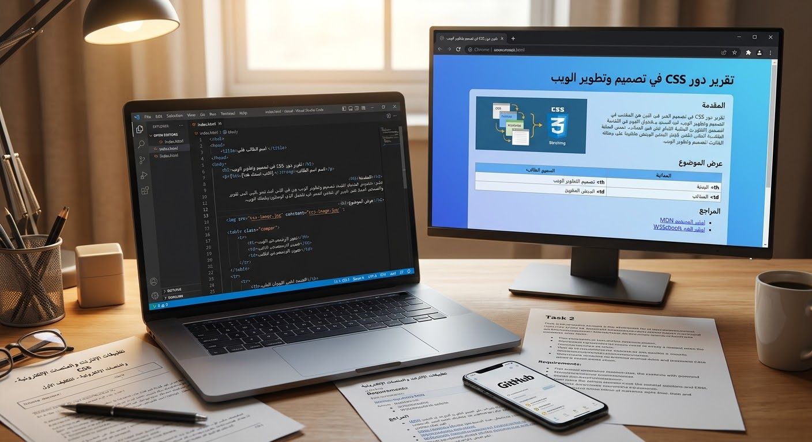

اسم الطالبة:ايه السيد محمد عبد الرحمن السيد]
الرقم الجامعي: [2501404]
في هذا التقرير هنتكلم عن دور لغة CSS في تصميم وتطوير صفحات الويب وإعطائها شكلاً جميلاً.
تعتبر لغة CSS مهمة جداً لأنها بتفصل التصميم عن الهيكل الأساسي للصفحة.
صورة توضيحية للموضوع:

| العنصر | الوصف |
|---|---|
| HTML | بناء الهيكل |
| CSS | التنسيق والألوان |